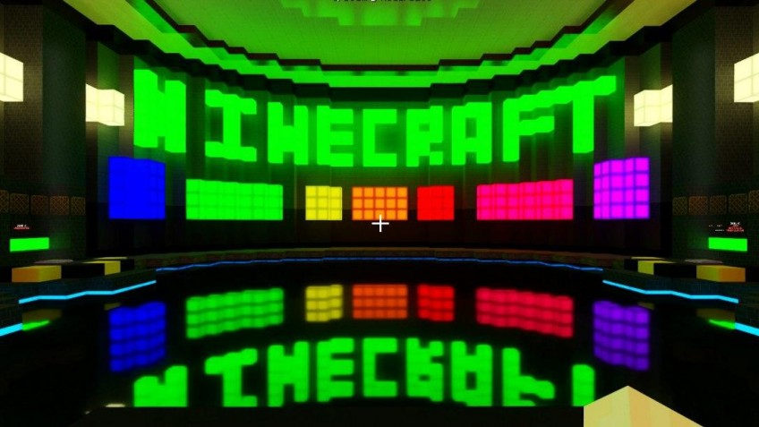

Статья
Minecraft RTX — апдейт, который плавит видеокарты. Тест трёх видеокарт и гайд по запуску
Дожили. Шутка «А на нём Minecraft пойдет?» перестала быть шуткой: для Minecraft вышло обновление с технологией рейтрейсинга, и оно буквально плавит видеокарты NVIDIA. Естественно, мы решили это дело протестировать. По-хорошему, апдейт надо было бы прогнать на всех доступных RTX, но в условиях карантина достать удалось только три штуки. Рассказываем, как запустить игру с ретрейсингом, как делать под него свои текстуры и как теперь справляются с «Майнкрафтом» RTX 2060, 2080 и 2080 Super.
Впервые об RT в Minecraft заговорили восемь месяцев назад — причём по странному стечению обстоятельств надстройку анонсировали ровно через неделю после закрытия косметического мода Super Duper. Совпадение или нет — не знаем, но факт налицо: Super Duper больше нет, а вот RT можно поставить прямо сейчас.
Для этого надо зарегистрироваться в программе Xbox Insider Hub, принять кучу пользовательских соглашений, а потом скачать бета-версию игры. Отметим, что сама надстройка бесплатная, но Minecraft всё равно придётся купить. Дальше есть три пути.
Первый — самый простой: загрузить и запустить уже готовые миры с поддержкой Ray Tracing. Официально они идут под маркой NVIDIA, но ответственны за них известные мододелы вроде Razzleberries, Dr_Bond, GerminiTay и BlokWorks.
Второй — это создать свой собственный мир. Тут уже чуть хитрее. Дело в том, что все эффекты RTX базируются на новых текстурах, и по умолчанию ни в игру, ни в местный магазин они не добавляются — прикручивать «лучики» надо самостоятельно.
Для этого с сайта NVIDIA надо скачать четыре пака с ресурсами и скопировать их в папку с игрой. Дальше — активируем паки при создании нового мира, и RTX работает.
А последний, третий путь — это создать собственные текстуры. И вот тут мы подходим к тому, как NVIDIA вообще добавила рейтрейсинг в Minecraft. Ответ прост: она перерисовала все текстуры и добавила в них дополнительные слои «материалов».
Суть в том, что обычные текстуры Minecraft собираются в два слоя — само изображение и альфа-канал, который указывает, какие части считать прозрачными. NVIDIA добавила к ним ещё четыре: металл, излучение, неровность и нормали, добавляющие текстурам объем.
С их помощью каждый кубик получает физическое описание, на основе которого и работает Ray Tracing со всеми его преломлениями и отражениями лучей.
Но как в итоге выглядит Minecraft с рейтрейсингом? С одной стороны, это торжество технологий: за счёт того, что Minecraft очень проста в плане графики, Ray Tracing тут работает на полную катушку. Вода правильно преломляет картинку и честно отражает все объекты вокруг. На зеркальных поверхностях виден каждый элемент уровня.
Тени правильно реагируют на источники света и накладываются друг на друга. Свет проходит по всем законам физики и создаёт массу невероятных эффектов, начиная с объёмного тумана и заканчивая «сумеречными лучами». Другое дело, что именно в Minecraft всё это выглядит очень странно.
Несмотря на то, что объекты и постройки прибавили в натуралистичности, в игре все эти навороты смотрятся как будто не к месту. Кинематографичный свет в мире кубиков? Прикольно, не спорим. Но увидят его далеко не все.
Во-первых, самая очевидная проблема: для «лучиков» нужна видеокарта из серии RTX. Во-вторых, это должна быть не просто любая, а очень мощная карта из серии RTX. Смотрите сами. Самая простая из них, 2060, еле-еле тянет новый Minecraft на базовом уровне играбельности.
То есть в Full HD с максимальными настройками получается ровно 30 fps и 22 кадра по 0,1%. Другими словами, не тормозит, но для Minecraft как-то маловато. В QHD 2060 вообще не вывозит — там у неё получается даже меньше 20 fps.
Был ли какой-нибудь смысл добавлять рейтрейсинг в Minecraft, покажет время. Нам пока кажется, что это просто технология ради технологии. Хотя надо признать, что, поиграв пару часов со включённым RT, возвращаться к классической графике уже не хочется.